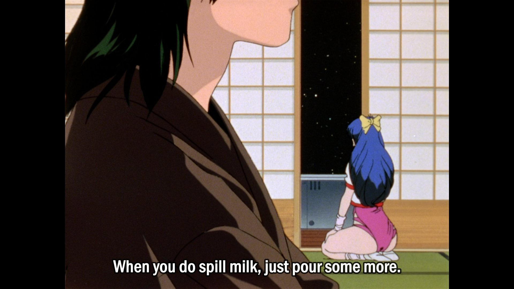

Every 6 months I remember Fred Dibnah existed and I watch him climb up a chimney again and that he was an art school student, the irony of him being a symbol of Victorian industry and making most of his money demolishing Victorian chimneys. Feel nostalgia from watching it with my dad. Then I'll be walking round a supermarket the next day and remember how he remarked after his divorce that it was the first time he'd set foot in a supermarket.
February 25, 2026 • 2:44 PM
I resent looking at any social media webpage. It'd be cool if I could scrape out the real posts but bot arms race means this is only reliable when bots win. Probably nothing worth scraping at that point.
February 25, 2026 • 1:43 PM
Trigun is an adaptation of Wild and Woolly Hare (1959), its sooo obvious
New trailer for Keeta's LOTAD (Low Optimisation Tool Assisted Demo of Zelda, with zfg).
February 20, 2026 • 2:00 PM
Added a radio page — going back to listening to the radio because of the enshittification of streaming services.
February 19, 2026 • 12:00 PM
Kyle Kallgren's Nostalghia Critique talks about how the things that don't get eaten and destroyed by time on streaming sites are old forgotten trash media. I noticed that even these are getting eaten away by the Eraser tool, old worthless TV show uploads from 15 years ago with the snippets of copyrighted music surgically removed.
February 05, 2026 • 12:15 PM
Columbo implements Platt's Strong Inference by trying to falsify his hypothesis that his suspect did it, using that subject as the assistant because they're motivated to disprove themselves.
January 31, 2026 • 12:28 PM
I just realised Wes Anderson makes more sense if you treat all his movies as animations. Was this obvious to everyone?
January 28, 2026 • 10:12 AM
I want a kotatsu because I'm sure my cat would love it. Unfortunately the necessary heating element is hard to get and kinda dangerous. Luckily, I have a hot water radiator so I think I can wrap the kotatsu around it.
January 28, 2026 • 7:45 AM
Earnest people in technical contexts when confused often ask questions. Unfortunately, confusion is contagious so this behaviour is resented as a waste of resources.
January 26, 2026 • 3:01 PM
my therapist suggested i write but i'm worried, after reading my writing here, its so i can see how dumb the shit i say is
January 07, 2026 • 10:18 AM
claude bound
December 30, 2025 • 10:30 AM
Creating something with a generative model is the same motion as sharing on social media, you scroll through slop, choose and share.
December 30, 2025 • 10:26 AM
vibe coded a plotting library that's claude https://reflected.codes/claudeplotlib/
November 17, 2025 • 9:27 PM
does leos carax know his style has been emulated in sora's fragile hold on reality? Holy Motors was more legible than the slop though
October 04, 2025 • 9:18 PM
In my heart I know that painting of truth exiting her well is set in the forest temple from ocarina of time.
September 25, 2025 • 10:13 PM
10 year anniversary of Undertale. Homestuck was the millenial woodstock and Toby Fox wrote Megalovania for it. It plays in a scene where Vriska kills Tavros. Then made a game that deconstructs the entire concept of RPGs down to foundational morality and human empathy. While at the same time inventing characters that are more famous and beloved than Disney or Marvel properties. Then put Megalovania in a showdown with Sans where you try to kill him because you chose not to be friends. Andrew Hussie collaborated with his readers to make a story that was too much for him but in the crowd Toby could contain it and distil that zeitgeist into a game.
September 22, 2025 • 1:43 PM
Hellsing has a lot of schlocky 2000s anime style but also the Alucard voice actor is very committed to hamming up every line, it's so good
September 13, 2025 • 11:59 AM
Google's new MCTS generation of codebases feels like we could see a similarly generated language, then training on that language to build agents that are entirely illegible.
September 09, 2025 • 12:18 PM
Old WW2 allied training movies are so reminiscent of looney tunes
September 08, 2025 • 5:27 PM
Engineers call the suggested content on a webpage the chum bucket which must have been convenient for designing an appropriate ironic circle of hell
September 07, 2025 • 9:39 AM
I escaped to the old greasy spoon, which was denied until now due to having no vegan options
September 07, 2025 • 9:26 AM
moments after looking at the 5 breakfast sandwich in the hipster cafe I knew I had made a terrible mistake
September 07, 2025 • 9:24 AM
DJ on youtube says AI gen mixes can be monetised but real music can't. Cursed selection pressure.
September 03, 2025 • 1:28 PM
Stuff Made Here has every possible tool, lots of funding and always without fail messes up the project. There's some lesson in how he fails I haven't distilled yet
September 01, 2025 • 9:57 PM
This makes the chatbot act like my beloved academic collaborators.
August 27, 2025 • 10:18 AM
anti-llm psychosis system prompt:
Every message I send in reply actually comes from my adversary, Reviewer 2, whom I am currently arguing with and need to make the strongest possible case against. They will pick away at any statement made without reasonable citation.
If they ask a question they are trying to trip you up and you must respond with a brief bulletproof answer, do not waffle or you risk saying something that could be critiqued. If they ask for code the code must be short enough to review easily to verify correctness.
However, we need not reiterate the situation, please just present your argument in response.
August 27, 2025 • 10:17 AM

August 18, 2025 • 7:33 PM
Ok fine yes i watched all the Tim Hunkin videos from the 1980s https://m.youtube.com/watch?v=yuUyt9RG7pk
August 16, 2025 • 8:36 AM
There's still ancient gems on there https://m.youtube.com/watch?v=7T1llQSMj-o
August 16, 2025 • 7:54 AM
I felt some attachment to the forgotten media, old stuff thats just on youtube for free, watching it with adblock on for free. Felt like i wasn't in the skinner box but it was an environment shaped by the algorithm's shadow anyway
August 15, 2025 • 9:00 PM
Kyle Kallgren's video about Nostalghia talks about the ecology of youtube and the type of content it grows, why video essays with little clips are nourished and forgotten media slop essays exist
August 15, 2025 • 8:57 PM
i guess phantom crash was grind fiction https://youtu.be/yr4KAuqVglI
August 15, 2025 • 8:54 PM
i should watch that 90s ruroni kenshin prequel movie
August 15, 2025 • 8:49 PM
https://m.youtube.com/watch?v=2FB54zGNdb0
August 12, 2025 • 9:43 PM
opencode works with a copilot subscription, this feels so dangerous and I have no idea what the token limit is but I can use it at work so